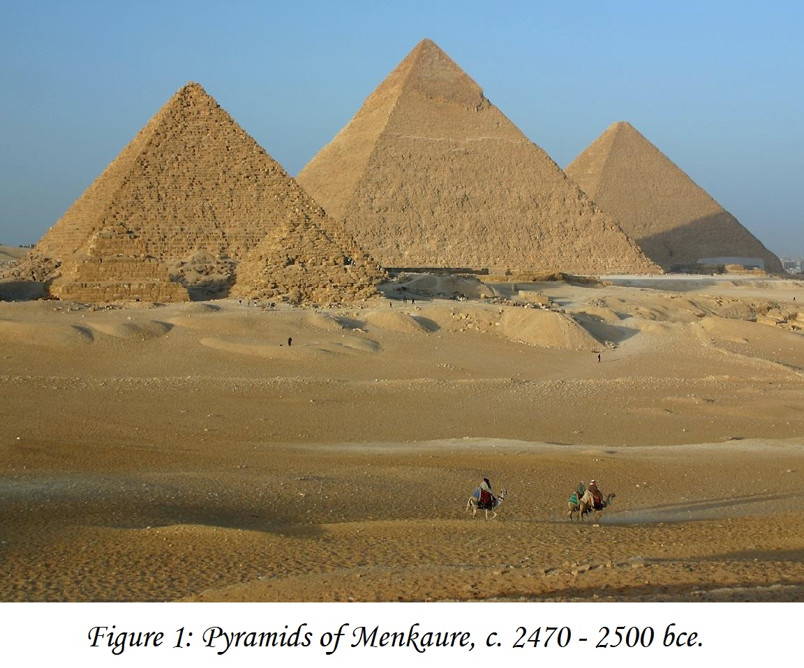
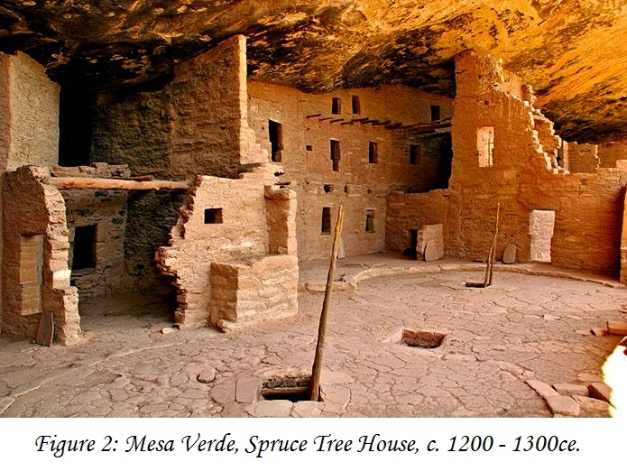
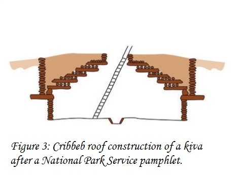
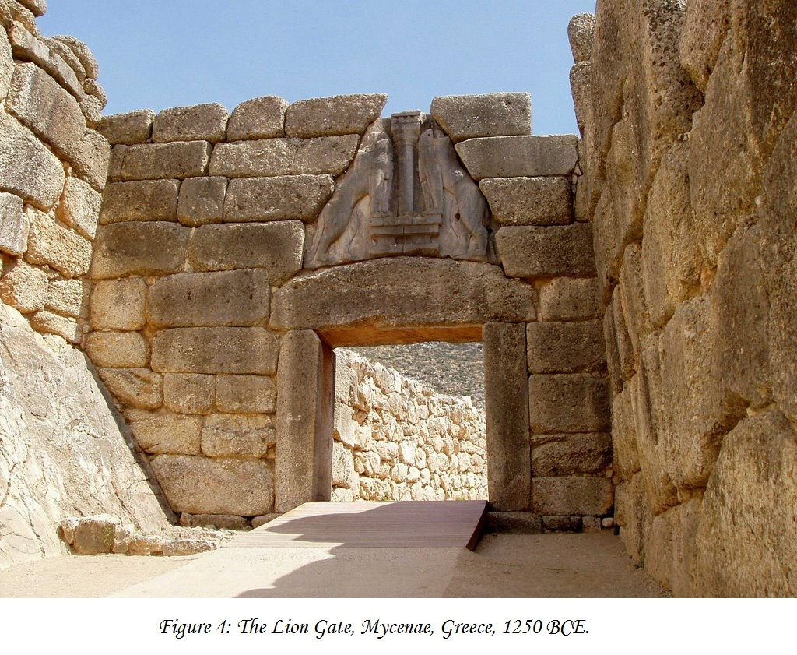
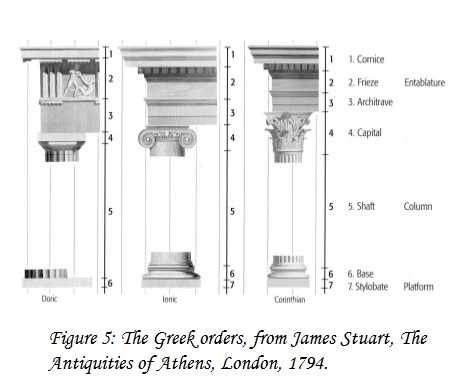
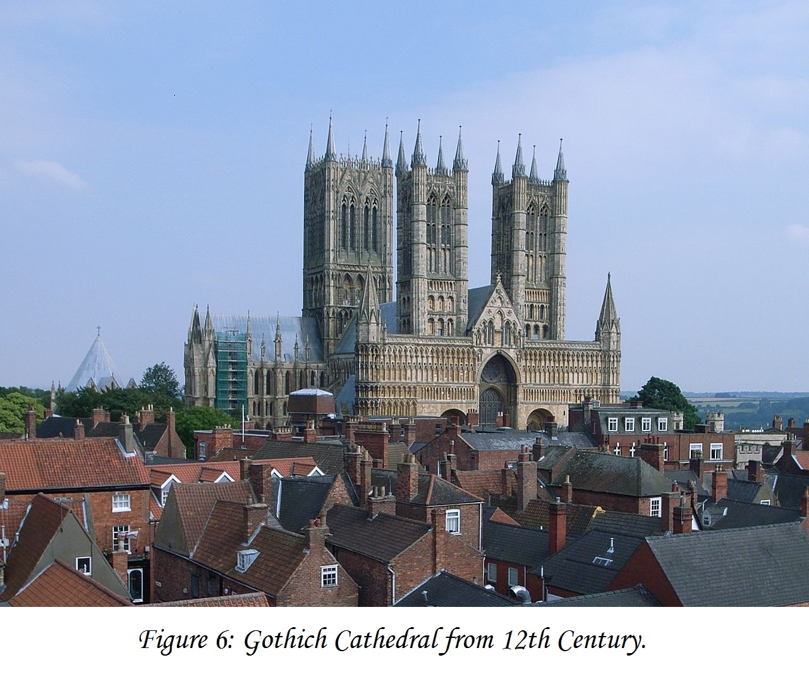

Architecture & Tecnology
Architecture
In this chapter, we will consider how our built environment has developed—how we have traveled, in effect, from Greek temples and Anasazi cliff dwellings to skyscrapers and postmodernist designs. We will see that the “look” of our buildings and our communities depends on two different factors and their interrelation—environment, or the distinct landscape characteristics of the local site, including its climatic features, and technology, the materials and methods available to a given culture.
Environment
The built environment reflects the natural world and the conception of the people who inhabit it of their place within the natural scheme of things. A building’s form might echo the world around it, or it might contrast with it. It also might respond to the climate of the place. In each case, the choices builders make reveal their attitudes toward the world around them. The architecture of the vast majority of early civilizations was designed to imitate natural forms. The significance of the pyramids of Egypt (Fig. 15-4) is the subject of much debate, but their form may well derive from the image of the god Re, who in ancient Egypt was symbolized by the rays of the sun descending to earth.
Show More...
The Anasazi cliff dwelling known as Spruce Tree House (Fig. 1) at Mesa Verde National Park in southwestern Colorado reflects a similar relation between humans and their environment. The Anasazi lived in these cliffside caves for hundreds, perhaps thousands, of years. The cave not only provided security, but also brought the people living there closer to their origin and, therefore, to the source of their strength. For unknown reasons, the Anasazi abandoned their cliff dwellings in about 1300 ce. One possible cause was a severe drought that lasted from 1276 to 1299. It is also possible that disease, a shortened growing season, or war with Apache and Shoshone tribes caused the Anasazi to leave the highland mesas and migrate south into Arizona and New Mexico.
At the heart of the Anasazi culture was the kiva, a round, covered hole in the center of the communal plaza in which all ceremonial life took place. The roofs of two underground kivas on the north end of the ruin have been restored. They are constructed of horizontally laid logs built up to form a dome with an access hole. The people utilized these roofs as a common area. Down below, in the enclosed kiva floor, was a sipapu, a small, round hole symbolic of the Anasazi creation myth, which told of the emergence of the Anasazi’s ancestors from the depths of the earth. In the parched Southwestern desert country it is equally true that water, like life itself, also seeps out of small fissures in the earth. Thus, it is as if the entire Anasazi community, and everything necessary to its survival, emerges from mother earth.
Technology
The structure of the kiva’s roof represents a technological innovation of the Anasazi culture. Thus, while it responds directly to the environment of the place, it also reflects the technology available to the builder. The basic technological challenge faced by architecture is to construct upright walls and put a roof over the empty space they enclose. Walls may employ one of two basic structural systems: the shell system, in which one basic material provides both the structural support and the outside covering of the building, and the skeleton-and-skin system, which consists of a b asic interior frame, the skeleton, that supports the more fragile outer covering, the skin.
Show More...
The values of the Greek city-state were embodied in its temples. The temple was usually situated on an elevated site above the city—an acropolis, from akros, meaning “top,” of the polis, “city”—and was conceived as the center of civic life. Its colonnade, a row of columns set at regular intervals around the building and supporting the base of the roof, was constructed according to the rules of geometry and embodied c ultural values of equality and proportion.
In ancient times, the heavier Doric order was considered masculine, and the more graceful Ionic order feminine. It is true that the Ionic order is slimmer and much lighter in feeling than the Doric.
Show More...
Gothic Cathedral Structure
Gothic Cathedral was a style developed in the 12th-century. Their origin was in France and they last until the 16th century. Theses cathedral’s characteristics were known for pointed arch, the ribbed vault, and the flying buttress. Churches, castles, and palaces were some of the places where this style was applied.
Cathedrals were made for many purpose. The price, time, and size were extraordinary high. Some of these cathedrals were built as a symbol to show how powerful and institution was. The church showed them as a divine place. The cathedrals were designed so a lot of light was able to enter through its big size windows, giving a sense of stateliness, and beauty.
The barrel vault at St. Sernin, in Toulouse, France is a magnificent example of Romanesque architecture. The plan of this church is one of great symmetry and geometric simplicity; It reflects the Romanesque preference for rational order and logical development. Every measurement is based on the central square at the crossing, where the two transepts, or side wings, cross the length of the nave, the central aisle of the church used by the congregation, and the apse, the semicircular projection at the end of the church that is topped by a Roman half-dome.
The great height of the Gothic cathedral’s interior space is achieved by means of a system of pointed, rather than round, arches. The height of a rounded arch is determined by its width, but the height of a pointed arch can readily be extended by straightening the curve of the sides upward to a point, the weight descending much more directly down the wall.
Show More...
Architecture is a visual art, and the buildings speak for themselves.